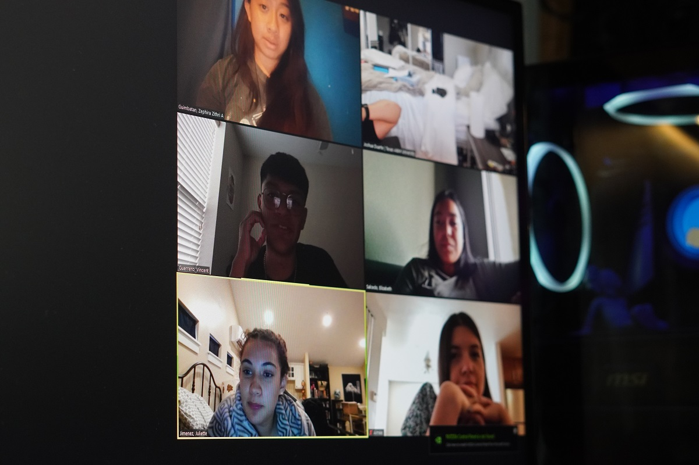
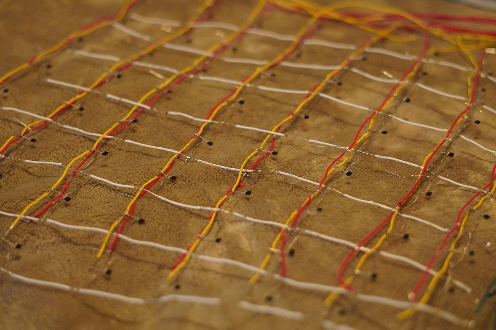
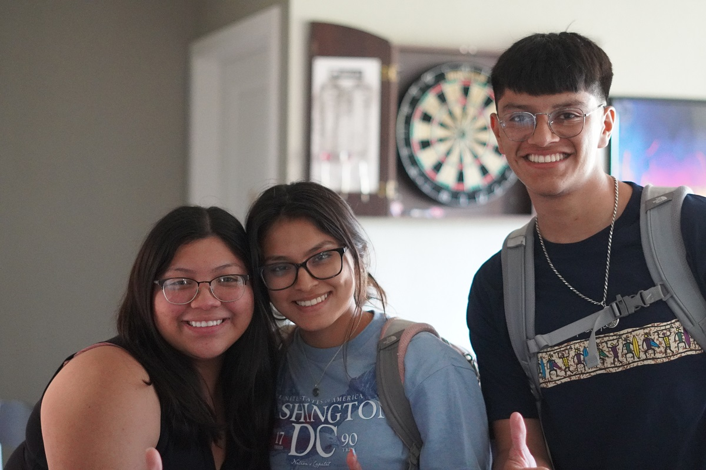
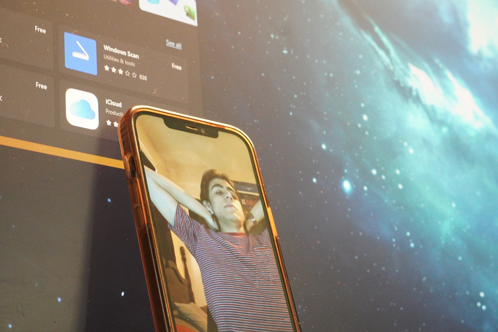
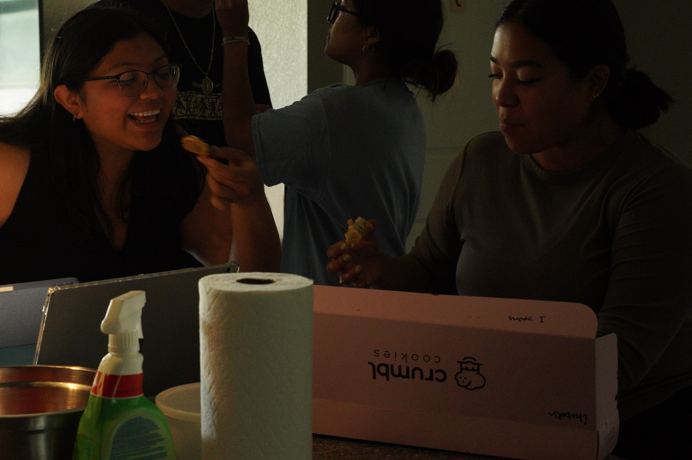

A pretty nice day. I had the opportunity to work on Gambits sensing matrix for the first time in a long time. I also ate some of my favorite foods. Food has always played an important role in my life. I have been tracking my caloric intake for a bit, and let me tell you. I don't know how some people do it for so long.
Today was also May 31st. The last day serving as the President of the Texas A&M University chapter of the Society of Hispanic Professional Engineers. It is sad to see this chapter come to a close, but I still have some work to do for the chapter so it has not hit me fully yet. I'll save my story about SHPE when it does.
Python also finally started working on my computer thanks to a dear friend of my, Garduno. It always amazes me how he is able to break down any of coding issues and somehow get things to work again. I am excited to start working on some of the python projects that I have lined up.
I have truly been enjoying the days lately.
SHPE
A year ago, I started my journey as the President of the Texas A&M University chapter of the Society of Hispanic Professional Engineers. The journey has been nothing short of amazing. From seeing strangers turn to family, to seeing members land their dream jobs, I have loved my time within SHPE. As the torch is being passed on to the next leaders of the organization, I had my last meeting with the incoming President, Vice President, and Treasurer of the chapter. Here we discussed how the sponsorship prospectus should be altered for the year to come.
 Last SHPE MeetingI truly am going to miss the organization and the people I have met along the way more than anyone could ever know.
Gambit
I dusted off the old hall effect sensor that I had soldered together over the course of the semester. As you may recall, I wanted to try to use hall effect sensors as a replacement to the reed switches that are currently used within the chessboard. The reason for this change is the nature of the two sensors. Reed switches only have on and off, 1 or 0 when they are in contact with a magnetic field or not. Hall effect sensors on the other hand provide a range different values depending on the proximity of the magnetic forces surrounding the sensor.
This attribute alone would allow users of the board to not be forced to place pieces directly in the center of each square, but now they would have some wiggle room to work with. The hall effect sensor matrix that I finally began working on today has been sitting in my room for quite some time. I think I have been scared to test it as I am not entirely positive that it will work.
 Hall Effect Sensor MatrixI thought that it would only be best to connect all of the wires to the arduino, write up some simple script and quickly test the matrix. I found that what I did does not currently work, but I want to save some debugging and stress for tomorrow.
Personal Project 'Internship'
Vincent, Evelyn, and Karen made it out again today. They continued working on their designs, and I thought I would teach them a thing or two about engineering drawings. I know its something that they would easily be able to create using the Solidworks feature once their part was created, but I think them learning the old way to do things would be good for them.
 The InternsThey are making progress on their designs, but after talking with Elizabeth, they need to start documenting their process a little bit more. Tomorrow I may have them work on their personal websites or finding what may work for them in terms of documentation.
Debugging
This sixty day process has been filled of debugging. Luckily, I have people in my corner that are willing to help whenever they can. One of those people is Luis Garduno. A great friend that has been a part of my life since freshman year of high school. We have seen eachother grow, and I am beyond proud of what he has accomplished so far. Today he helped me with my python issues. I somehow found a way to royally mess up some of the paths that were used to store python and the interpreters that I used for it. Garduno came to the rescue and was ultimately able to get my system up and running again.
 Garduno: The legendary helping handTomorrow I hope to make use of my working python system. Who knows what problems lie ahead.
Eats
Today was a really great day for my stomach. Over the course of the last few weeks, I have somehow not ate out. This was something that was really hard to do over the course of the semester. Today however, Elizabeth came over today with a box of Crumbl cookies and I wish I could have gotten a picture of the smile that I had. Bless Elizabeth and all she does. And if you have the chance, you should definetely try their cookie dough and the lemon crinkle cookies.
 Crumbl cookiesssssAlong with the Crumbl cookies, I had one of my all time favorite meals here in College Station. Barbacoa tacos from the Beef & Reef at the Backyard. These tacos are everything to me. They never fail to make me salivate and stare in awe. I definetely need to have these atleast one or two more times while I am still around.
Tacos sent from heavenHabit Tracking
Today, I journaled, worked out, read, kinda tracked my caloric intake, and worked on at least one of my personal projects. Today was a good day.
What I am thankful for
I am thankful for the Society of Hispanic Professional Engineers. For without you, I would not be who I am today.
The best preparation for the future is to live as if there were none. Do More. - J.D.